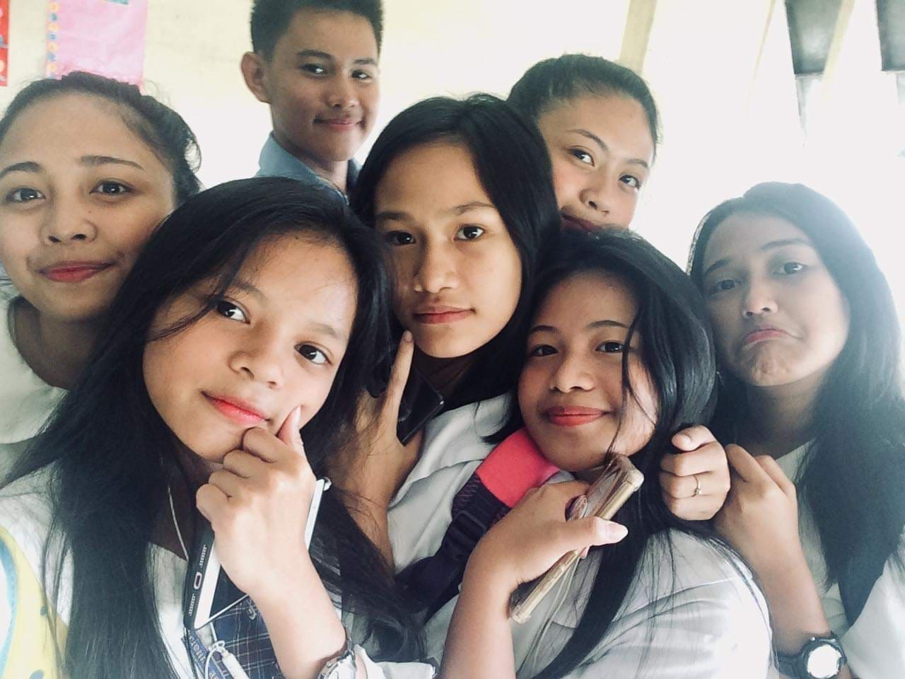
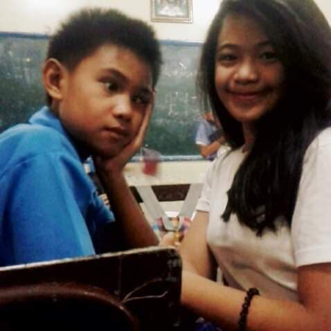
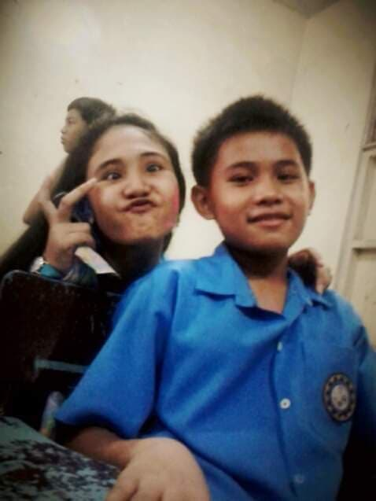

This is one of the best era of my life my Highschool Junior High Era. I made a lot of friends during highschool there were only 19 students in our section from Grade 7 to Grade 10 and all of them are my friends. This time I had a bigger circle of friends and they're all kind and friendly we also share snacks and lunch together. This circle of friend is amazing because we are more open to each other. When we were in Grade 8 we started to do this so called Open Forum, in which we will open up our minds and share our thoughts on each other you sent like first impressions, things we don't like about each other and more. This helps us strengthen our bond and our relationship. Because of this we used to join dance presentation at our school cause we all get along and it makes teaching the steps easier.
 
During this Highschool Era I also participated in Poster Making Event at our school. Unfortunately my skills back then wasn't that great and Lose. I also participated in Banner Making for Nutrition month and won 2nd place It's wasn't that much but I'm proud of myself about it. Then the day our Moving Up ceremony came and it felt amazing. I know I still have a long journey ahead towards my goals and dreams, but it felt amazing because I can see and feel the progress that I have achieved. Because of my participation in Art related Events I won an award Artist of The Year batch 2018-2019. And that makes me feel even more amazing.
My favorite muic during my Junior Highschool days is Demons - Imagine Dragons. This is the time where I first discovered Imagine Dragons.